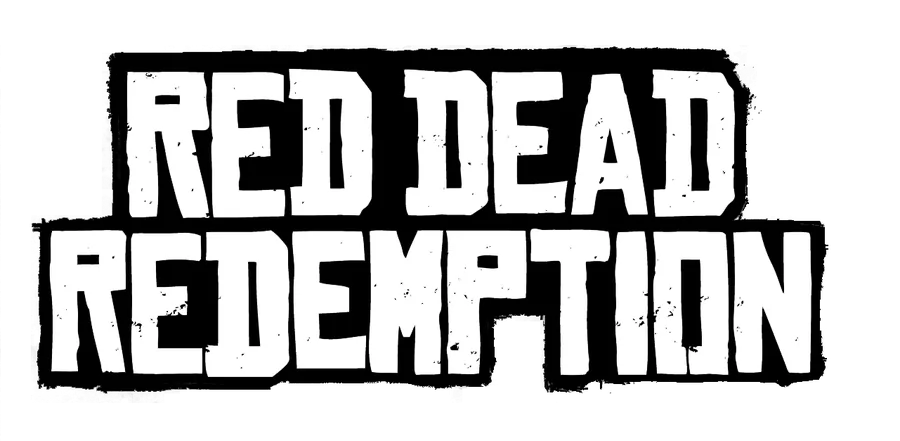

Red Dead Redemption

O fim da era do Velho Oeste se aproxima e os homens da lei caçam as últimas gangues. Depois de um assalto que deu errado em Blackwater, Arthur Morgan e a gangue Van der Linde fogem pelo coração da América, divididos entre a lealdade ao grupo e a sobrevivência. Roubos, traições e escolhas difíceis definem o destino de cada um.
Assistir Episódio 7